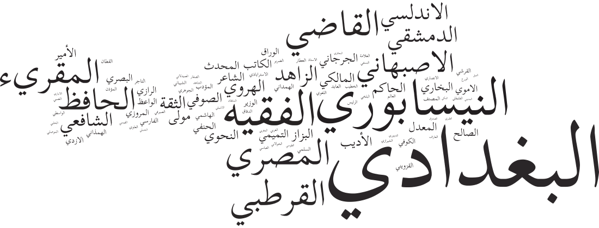

The written heritage of the “Islamicate” cultures that stretch from modern Bengal to Spain is as vast as it is understudied and underrepresented in the digital humanities. The sheer volume and diversity of the surviving works produced in Persian and Arabic by denizens of these lands in the premodern period makes this body of texts ideal for computational forms of analysis. Efforts to utilize these new digital forms of analysis, however, have been stymied by the lack of a reliable corpus.
The Islamicate Texts Initiative (ITI) is a multi-institutional effort to construct the first machine-actionable scholarly corpus of premodern Islamicate texts. Led by researchers at the Aga Khan University (AKU), Universität Leipzig (UL), and the Roshan Institute for Persian Studies at the University of Maryland (College Park) and an interdisciplinary advisory board of leading digital humanists and Islamic, Persian, and Arabic studies scholars, ITI aims to provide the essential textual infrastructure in Persian and Arabic for new forms of macro textual analysis and digital scholarship. In the process, ITI will enable new synergies between Digital Humanities and the inter-related Islamicate fields of Islamic, Persian, and Arabic Studies.
After completing pilot Persian and Arabic corpus projects over the course of 2015 (The KITAB (Knowledge, Information, and The Arabic Book) and Persian Digital Library (PDL) projects), ITI team members began drafting an implementation plan that would bring together these efforts in one united Islamicate textual corpus that would contain approximately 10,000 Islamicate texts (ca. 7,000 Arabic and 3,000 Persian texts). In this stage, we will (1) review and format existing open-access premodern Persian and Arabic text according to the CapiTainS canonical text services (CTS) standards; (2) enrich these texts with as much verified metadata as possible (using our data schema developed in the pilot stage); and (3) develop and execute a plan to achieve greater parity in the number, genre, and chronological coverage of both Persian and Arabic texts in the ITI corpus after reviewing results of first phase of the work plan.
| Sarah Bowen Savant | Maxim Romanov | Matthew Thomas Miller |
|---|---|---|
| Associate Professor @ Institute for the Study of Muslim Civilisations, Aga Khan University, London (kitab-project.org) | Research Fellow @ Alexander von Humboldt-Lehrstuhl für Digital Humanities, Institut für Informatik, Universität Leipzig | Roshan Institute Research Fellow @ Roshan Institute for Persian Studies Associate Director, Roshan Initiative in Persian Digital Humanities (PersDig@UMD), University of Maryland, College Park |
| For more information about ITI, please contact the project manager, Samar Ali Ata sata@umd.edu, or follow us on Github |  |